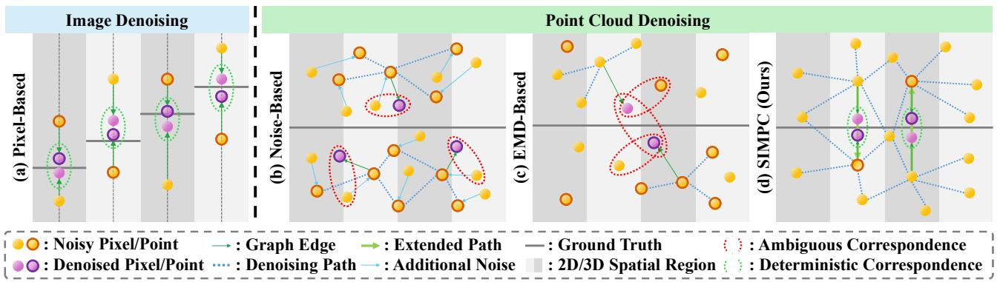

先说结论。作为 3D 几何自监督的 ICML 条目扫读即可。 用自诱导几何对应关系替代 noisy variant 之间的模糊统计映射，强化点云表面的无监督定位。
Figureure 2 · An illustration of the proposed Self-Induced Mirror-Point Consistency Figure 2. An illustration of the proposed Self-Induced Mirror-Point Consistency (SIMPC) framework. Given two noisy point clouds, we perform iterative denoising using shared denoiser blocks. Unlike previous approaches that establish relationships across noisy variants through noise injection or EMD-based alignment, we employ the Chamfer Distance to provide a basic similarity constraint between variants. Furthermore, within each variant, we introduce a Mirror-Point Generation Module (MPGM) and Mirror-Point Consistency Loss (MPCL) to learn deterministic one-to-one correspondences.这张图概括 SIMPC 的整体方法流程。阅读时先看模块之间传递的训练信号，再看作者如何把目标拆成可优化的子问题。

Figureure 1 · An illustration of the differences between image and point cloud denoiFigure 1. An illustration of the differences between image and point cloud denoising. Points w/ and w/o darker outlines indicate different noisy variants. For images, pixel-based indexing in (a) enables establishing correspondences between noisy variants associated with the same ground truth. Existing point cloud denoising methods, such as (b) Noise-based and (c) EMD-based approaches, establish ambiguous correspondences. By contrast, our proposed (d) SIMPC extracts geometric priors during the denoising process to generate mirror-points with deterministic correspondences, and further localizes the position of the underlying surface by learning consistent denoising targets.这张图来自论文 PDF 的结构化抽取。当前用于辅助理解 SIMPC 的方法或实验，请结合正文精读段落一起看。
核心问题
作为 3D 几何自监督的 ICML 条目扫读即可。
方法拆解
为每个 noisy point 生成位于底层表面另一侧的 mirror point，并约束原点和镜像点的 denoising target 一致。